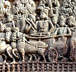

जीएसएस राजस्थान
About GSS
गणतांत्रिक समाज संगठन आप सभी समाज के प्रबुद्ध व्यक्तियों को अपार हर्ष के साथ सूचित किया जाता है कि कुछ प्रबुद्ध साथियों द्वारा एक संस्था का गठन किया गया है, जिसका नाम गण तांत्रिक समाज संगठन है जो समाज के सभी (ओबीसी एससी एसटी माइनॉरिटी) वर्ग के लोगों के लिए एक अंब्रेला( छाता) की तरह कार्य करेगा, जो पूर्णतया नॉन पॉलिटिकल (गैर राजनीतिक) तथा टेक्नोलॉजी वेस्ड (संपुर्ण संसाधन संपन्न) होगा ।जिसका प्रथमत: मुख्य कार्य पूरे देश में सभी वर्गों के लोगों को इस संगठन से जोड़ने के लिए अनवरत कार्य करेगा । इस संगठन द्वारा यह कोशिश की जा रही है कि ज्यादा से ज्यादा ग्रुप ए बी सी दर्जे के सभी पदाधिकारी जुड़कर समाज को आगे बढ़ाने के लिए सहर्ष योगदान दें, जिससे लोगों में विश्वास बढ़ सके। आज की अवधि में समाज के लोगों का विश्वास तमाम संगठनों पर से उठ गया है जिस कारण वे लोग किसी भी सामाजिक कार्यों में भाग नहीं ले रहे हैं ।इसका मुख्य कारण सामाजिक संस्थानों एवं संगठनों की लोलुपता और व्यक्ति विशेष को लाभ पहुंचाने से लोगों में आत्मविश्वास की कमी आई है। इस प्रकार की कमियों को दूर करने के उद्देश्य से जीएसएस द्वारा यह सुनिश्चित किया गया है कि पूरे सिस्टम विधि विधान में पारदर्शिता हो और समाज को आगे बढ़ाने हेतु ईमानदारी और समरसता पूर्वक कार्य करेगा। जीएसएस द्वारा क्रियान्वयन कार्य निम्नलिखित हैं
- जीएसएस की राष्ट्रीय कमेटी (समिति), राज्य स्तरीय कमेटी (समिति) गठित कर उनके क्रियाकलापों पर ध्यान रखेगी । अब राज्य स्तरीय कमेटी (समिति) राज्यों के सभी जिला में जिला स्तरीय कमेटी (समिति) गठित कर उनके क्रियाकलापों पर ध्यान रखेंगी। इसी प्रकार जिला कमेटी (समिति) प्रखंड स्तर पर, तथा प्रखंडस्तरीय कमेटी समिति पंचायत स्तर पर कमेटी का गठन कर अधिक से अधिक लोगों को सदस्य बनाने का काम करेंगी राशियों को अधिक से अधिक सहयोग करने का काम करेगी जिसकी सूची सूची बनाई जा रही है जिसमें आप अपना बायोडाटा दिए गए ईमेल :- rajasthangss@gmail.com पर सरलता से भेज सकते हैं या भेजने का कष्ट करें
- जीएसएस की वेबसाइट पर सभी प्रकार की वैकेंसी एंड शिक्षा से संबंधित एजुकेशनल जानकारी उपलब्ध कराई जाएगी।
- जीएसएस की वेबसाइट पर केंद्र सरकार तथा राज्य सरकार के द्वारा चलाई जा रही क्रियान्वयन योजनाओं एवं लाभकारी योजनाओं के बारे में समुचित जानकारी दी जाएगी जिससे समाज के लोग सरलता से उसका लाभ उठा सकें।
- जीएसएस राज्य के सभी जिलों में अपना ऑफिस खोलेगा जहां समाज के समस्त लोग से आग्रह करेगा कि आप अपनी कोई भी समस्या लेकर आए और और सरलता से उसका निदान पाये। जैसे विधवा पेंशन वृद्धा पेंशन किसी दबंग द्वारा सताया जाना दिव्यांग पेंशन दिव्यांग का प्रमाण पत्र इत्यादि किसी भी तरह की समस्या का निवारण समस्या संबंधी (स्पेशलिस्ट) विशेषज्ञों द्वारा किया जाएगा जो पूर्णतया ऑनलाइन होगा।
- जीएसएस पंचायत स्तर पर बनी कमिटी के सदस्यों द्वारा प्रत्येक गांव में केवल एक ही विलेज वॉलिंटियर बनाएगा जो पूर्णतया समाज के लिए कार्य करेगा एवं ग्राम स्तर पर सदस्यता ग्रहण करवाएगा।
- जीएसएस नई टेक्नोलॉजी द्वारा डायरेक्टरी का निर्माण किया है जिसमें प्रत्येक कार्य क्षेत्र से या कार्यक्षेत्र में कार्यरत / सेवानिवृत्त लोगों जैसे कि सरकारी सेवा में समस्त वरीय व कनीय पीठासीन पदाधिकारी गण, अधिवक्ता न्यायाधीश, इंजीनियर, व्यवसायिक और संपादक इत्यादि लोगों की सूची तैयार करेगा । जिनसे ससमय काम लिया जा सके ।
- जीएसएस गरीब के मेधावी बच्चों को उनके योग्यता के अनुसार समुचित सुविधाएं प्रदान करेगा । जैसे उनकी फीस देना, काउंसलिंग कराना, अच्छे इंस्टिट्यूट विश्वविद्यालयों में नामांकन कराना, इत्यादि। तथा जीएसएस वैसे प्रतिभाशाली छात्र छात्राओं को आर्थिक सहायता प्रदान करेगा जो आईआईटी या आई आई एम जैसी परीक्षा पास करने के उपरांत नामांकन शुल्क देने में अक्षम है उनके लिए शुल्क देने का प्रावधान करेगा।
- जीएसएस अब तक बिखरी हुई छोटी-छोटी संस्थाओं को चैन पद्धति चलाकर अपने साथ जोड़ कर आज को मजबूत और सशक्त कर करेगा।
- जीएसएस विदेशों में शिक्षा प्राप्त करने वाले मेधावी छात्रों की एक टीम तैयार की है जो विदेशों में शिक्षा प्राप्त करने वाले इच्छुक छात्र छात्राओं को उचित मार्गदर्शन और समुचित सलाह दे सकें
- जीएसएस अपने समाज के जुझारू कर्मठ इमानदार व सामाजिक समरसता रखने वाले लोगों की फौज खड़ी कर रही है जो अन्य लोगों द्वारा जबरन सताय जाने या विवाद उत्पन्न किए जाने पर विपक्षियों का दमन करने के लिए चट्टान की तरह आर्थिक या शारीरिक मदद देकर (दिखाकर) समाज को सशक्त कर सके और समाज में हो रहे भेदभाव और अत्याचार को जड़ से समाप्त किया जा सके।
- जीएसएस किसी भी विभाग में नई भर्ती होने वाले समस्त साथियों व बहनों को सम्मानित करेगा तथा सेवानिवृत्त होने वाले हैं कर्मचारियों को भी विदाई सम्मान समारोह कराएगा। साथ ही साथ हमारे आईएएस, आईपीएस, आईएआरएस अधिकारी से लेकर एमटीएस तक के सभी कर्मचारियों को जोड़ने का संकल्प लिया है तथा इन सभी लोगों से इस संगठन को सुचारू रूप से आगे बढ़ाने के लिए और अपने समाज के उत्थान के लिए अधिक से अधिक शारीरिक मानसिक, और आर्थिक रूप से योगदान देने के लिए संकल्पित करेगा।
- जीएसएस द्वारा उपरोक्त सभी बिंदुओं को क्रियान्वयन करने के लिए, अपने समाज के सभी कनिय व वरीय अधिकारी एवं कर्मचारियों को एकता के एक सूत्र में जुड़ने हेतु एक सॉफ्टवेयर का निर्माण किया गया है। जिसमें आप सभी समाज के प्रबुद्ध लोगों से करबद्ध प्रार्थना है कि ज्यादा से ज्यादा जुड़े और जोड़े तथा इसे सफल बनाने के लिए अधिक से अधिक सहयोग प्रदान करने की अपील करता है ।
- rajasthangss@gmail.com
- Address
- Rajasthan, State- Rajasthan,
Country - India - Mobile
- +91 9414534529
- Join GSS
- Membership with GSS
- Directory entry
- click
- History Pictures
- History Pictures
कुशवाहा, शाक्य, मौर्य, सैनी, माली, ऐतिहासिक, सांस्कृतिक, सामाजिक, वैज्ञानिक, धार्मिक, भौगोलिक, शिक्षा, स्वास्थ्य संपदा के संवैधानिक मौलिक अधिकारों का ज्ञान।
GSS User Data
गणतांत्रिक समाज संगठन
भारतीय उपमहाद्वीप में विज्ञान और प्रौद्योगिकी का इतिहास
दुनिया का पहला गणराज्य था प्राचीन भारत का वैशाली
समतामूलक समाज का द्योतक है गणतंत्र
महात्मा जोतिबा फुले
सम्राट अशोक समेत 10 मौर्य राजाओं ने कैसे बनाया भारत को सोने की चिड़िया

Communicative

Maurya Emperor
Chandragupta
(350-295 BCE)
The first emperor of the Mauryan Empire in Ancient India.
He expanded an extensive kingdom in Magadha.
For more click
Chandragupta Maurya
Bindusara Maurya
(r.c.297-c.273 BCE)
The second Mauryan emperor of Ancient India.
He was the son of the dynasty's founder Chandragupta.
For more click
Bindusara Maurya
Ashoka
(c.268-c.232 BCE)
The third emperor of the Maurya Empire of the Indian subcontinent.
His empire covered a large part of the Indian subcontinent.
For More click
Ashoka Maurya
Kunala Maurya

(263 BCE)
The Crown Prince and son of 3rd Mauryan Emperor Ashok in Ancient India.
The Great and Queen Padmavati[2] and the presumptive heir to Ashok.
For more click
Kunala Maurya
Dasharatha Maurya
(c.232-c.224 BCE)
The 4th Mauryan emperor of the Mauryan Empire in Ancient India.
He was a grandson of Ashoka The Great and is commonly held to the imperial ruler of India.
For more click
Dasharatha Maurya
Samprati Maurya